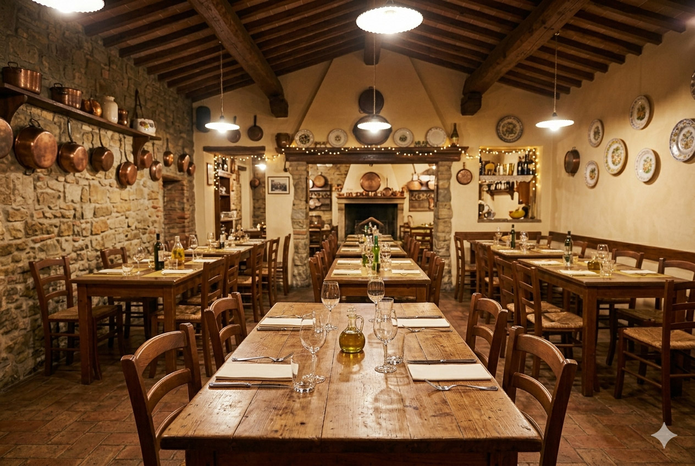

Sapori di Casa
Autentica tradizione italiana sin dal 1984
Prenota subito
Sapori di Casa è un ristorante italiano che dal 1984 accoglie i suoi ospiti con il calore, i profumi e
l'autenticità della vera cucina tradizionale. Nato dal sogno di una famiglia profondamente legata alle ricette
di una volta, il locale è diventato negli anni un punto di riferimento per chi desidera riscoprire i sapori genuini
della tavola italiana. L'atmosfera è elegante ma familiare, fatta di dettagli curati, sorrisi sinceri e di un'ospitalità
che fa sentire ogni cliente come a casa propria.
La cucina di Sapori di Casa racconta una storia di passione, stagionalità e rispetto per le materie prime. Ogni piatto
è ispirato alla tradizione regionale italiana: dalla pasta fresca fatta a mano ai sughi lenti e ricchi di gusto, dai
secondi preparati secondo antiche ricette ai dolci classici della memoria, come il tiramisù e la crostata della casa.
Il menù valorizza ingredienti selezionati con attenzione, olio extravergine di qualità, formaggi tipici e prodotti del
territorio, per offrire un'esperienza autentica che unisce semplicità, gusto e raffinatezza.
Oggi, dopo oltre quarant'anni di attività, Sapori di Casa continua a rappresentare un luogo d'incontro tra tradizione
e continuità, dove il tempo sembra rallentare per lasciare spazio al piacere della convivialità. È il ristorante ideale
per una cena in famiglia, una ricorrenza speciale o un pranzo tra amici all'insegna della buona cucina italiana.
La sua lunga storia, costruita giorno dopo giorno con dedizione e amore per il mestiere, rende Sapori di Casa non solo
un ristorante, ma un'esperienza fatta di memoria, identità e autentica passione gastronomica.

.jpg)
Piatto 1
Breve descrizione del piatto o degli ingredienti usati
.jpg)
Piatto 2
Breve descrizione del piatto o degli ingredienti usati
.jpg)
Piatto 3
Breve descrizione del piatto o degli ingredienti usati
Perchè sceglierci
Ingredienti freschi
Chef esperto
Atmosfera familiare
Marco Valenti
Ciò che mi stupisce ogni volta di Sapori di casa è l'equilibrio perfetto tra tecnica moderna e sapori della memoria. Si sente la mano di Marco e della nuova generazione: la materia prima a chilometro zero è trattata con un rispetto sacro, e la loro Cantina del Gusto è una vera gemma nascosta per chi, come me, ama scoprire vitigni autoctoni meno noti. Ho provato il menu speciale per il 40° anniversario e sono rimasto folgorato dalla reinterpretazione dei piatti storici: pulizia nei sapori, presentazioni eleganti, ma con la stessa sostanza di una volta. Un’esperienza impeccabile.
Marco Valenti
Ciò che mi stupisce ogni volta di Sapori di casa è l'equilibrio perfetto tra tecnica moderna e sapori della memoria. Si sente la mano di Marco e della nuova generazione: la materia prima a chilometro zero è trattata con un rispetto sacro, e la loro Cantina del Gusto è una vera gemma nascosta per chi, come me, ama scoprire vitigni autoctoni meno noti. Ho provato il menu speciale per il 40° anniversario e sono rimasto folgorato dalla reinterpretazione dei piatti storici: pulizia nei sapori, presentazioni eleganti, ma con la stessa sostanza di una volta. Un’esperienza impeccabile.
Marco Valenti
Ciò che mi stupisce ogni volta di Sapori di casa è l'equilibrio perfetto tra tecnica moderna e sapori della memoria. Si sente la mano di Marco e della nuova generazione: la materia prima a chilometro zero è trattata con un rispetto sacro, e la loro Cantina del Gusto è una vera gemma nascosta per chi, come me, ama scoprire vitigni autoctoni meno noti. Ho provato il menu speciale per il 40° anniversario e sono rimasto folgorato dalla reinterpretazione dei piatti storici: pulizia nei sapori, presentazioni eleganti, ma con la stessa sostanza di una volta. Un’esperienza impeccabile.
Giulia Bianchi
Ho scoperto questo posto quasi per caso cercando un ristorante che avesse una storia vera da raccontare, e me ne sono innamorata. L'atmosfera è magica, soprattutto nel dehor, ma è la filosofia della sostenibilità che mi ha conquistata: sapere che ciò che mangio arriva da aziende agricole locali in meno di 24 ore fa la differenza. Anche se sono cresciuta in un’epoca diversa, qui respiro un’autenticità che difficilmente trovo altrove. Bonus speciale per i loro sughi in vasetto: ne ho fatto scorta per portare un po’ di quella magia anche nei miei pranzi veloci in ufficio!
Giulia Bianchi
Ho scoperto questo posto quasi per caso cercando un ristorante che avesse una storia vera da raccontare, e me ne sono innamorata. L'atmosfera è magica, soprattutto nel dehor, ma è la filosofia della sostenibilità che mi ha conquistata: sapere che ciò che mangio arriva da aziende agricole locali in meno di 24 ore fa la differenza. Anche se sono cresciuta in un’epoca diversa, qui respiro un’autenticità che difficilmente trovo altrove. Bonus speciale per i loro sughi in vasetto: ne ho fatto scorta per portare un po’ di quella magia anche nei miei pranzi veloci in ufficio!
Giulia Bianchi
Ho scoperto questo posto quasi per caso cercando un ristorante che avesse una storia vera da raccontare, e me ne sono innamorata. L'atmosfera è magica, soprattutto nel dehor, ma è la filosofia della sostenibilità che mi ha conquistata: sapere che ciò che mangio arriva da aziende agricole locali in meno di 24 ore fa la differenza. Anche se sono cresciuta in un’epoca diversa, qui respiro un’autenticità che difficilmente trovo altrove. Bonus speciale per i loro sughi in vasetto: ne ho fatto scorta per portare un po’ di quella magia anche nei miei pranzi veloci in ufficio!
Roberto Fontana
Frequento Sapori di casa sin da quando Giuseppe e Maria aprirono quella piccola porta nel 1984. All'epoca venivo per le tagliatelle al ragù antico che mi ricordavano quelle di mia madre, e oggi, a quarant'anni di distanza, quel sapore non è cambiato di un millimetro. È raro trovare un posto che sappia crescere e rinnovarsi, come hanno fatto con lo splendido Dehor degli Ulivi, senza perdere l'anima. Per me non è solo un ristorante, è un pezzo della mia vita dove ogni pranzo della domenica sa ancora di casa e di tradizioni rispettate con il cuore.
Roberto Fontana
Frequento Sapori di casa sin da quando Giuseppe e Maria aprirono quella piccola porta nel 1984. All'epoca venivo per le tagliatelle al ragù antico che mi ricordavano quelle di mia madre, e oggi, a quarant'anni di distanza, quel sapore non è cambiato di un millimetro. È raro trovare un posto che sappia crescere e rinnovarsi, come hanno fatto con lo splendido Dehor degli Ulivi, senza perdere l'anima. Per me non è solo un ristorante, è un pezzo della mia vita dove ogni pranzo della domenica sa ancora di casa e di tradizioni rispettate con il cuore.
Roberto Fontana
Frequento Sapori di casa sin da quando Giuseppe e Maria aprirono quella piccola porta nel 1984. All'epoca venivo per le tagliatelle al ragù antico che mi ricordavano quelle di mia madre, e oggi, a quarant'anni di distanza, quel sapore non è cambiato di un millimetro. È raro trovare un posto che sappia crescere e rinnovarsi, come hanno fatto con lo splendido Dehor degli Ulivi, senza perdere l'anima. Per me non è solo un ristorante, è un pezzo della mia vita dove ogni pranzo della domenica sa ancora di casa e di tradizioni rispettate con il cuore.